1950년대 핀업 스타일 햄스터가 매크로 클로즈업으로 정교하게 윙 아이라이너를 그리다가 '아…아…취!' 재채기 한 번에 양쪽 눈이 번진 채 풀샷으로 빠지고, 멍한 정면 응시+곁눈질로 끝나는 8초 원테이크 코미디.
| 화면 비율/해상도 | 9:16 · 720x1280 (source, Instagram) -> deliver 1080x1920 · 24fps |
|---|---|
| 화면 방향 트릭 | 없음. 회전 트릭 없이 네이티브 세로 생성. 컷도 없음: 0~4.29초 매크로 ECU → 4.29~4.46초 재채기 모션블러 흔들림 → 4.46~5.62초 카메라가 빠르게 뒤로 빠지는(dolly-out/zoom-out) 리빌 → 5.62~8.00초 미디엄 풀샷 고정. 하나의 연속 카메라 무브로 '컷처럼 느껴지는' 크기 변화를 만든 것이 핵심. |
| 워터마크 | 화면 모서리 가시 워터마크 없음(보이지 않는 SynthID류는 확인 불가). 대신 드레스 가슴(화면 오른쪽 가슴, x≈62%, y≈69%)에 흰색 필기체 'BrainSnack' 자수 = 채널명(itsbrainsnack)을 장면 속 소품으로 박아 넣은 '인씬 브랜딩'. 리메이크 시 본인 채널명으로 교체 권장. |
| 화면 문구/자막 | 없음 (자막/캡션 오버레이 없음. 드레스 자수 'BrainSnack'만 존재) |
| 원본 캡션 | Trying to get the wings even was already hard enough 😭🖤 #makeuplover #hamster #eyeliner |
| segment_count | 3 |
|---|---|
| source_signature_ko | 정확히 8.00초 / 720x1280 / 24fps(192프레임) / 네이티브 오디오(효과음만, 음악 없음) → Veo 3 계열(veo-3-1) 단일 8초 생성물의 전형적 스펙. 채널이 Higgsfield를 크레딧하므로 Higgsfield 안의 Veo 3.x로 만든 것으로 강하게 추정(확정 아님). |
첫 프레임부터 극단적 매크로 클로즈업: 핀컬 가발+물방울 반다나를 한 햄스터가 작은 분홍 앞발로 리퀴드 라이너를 쥐고 눈꼬리 윙을 긋고 있음. '햄스터가 화장을?'이라는 인지 부조화 + 펜 긁는 ASMR 사각거림(0.05~1.45s, 1.95~2.95s)이 동시에 들어와 0.5초 안에 스크롤을 멈추게 함. 캡션이 '윙 맞추기만도 힘들었는데'라고 먼저 결말을 암시해 '무슨 일이 생기지?' 기대를 만든다.
| Setup 0.00-2.95s | 매크로 ECU. 3/4 측면(얼굴이 화면 오른쪽을 향함)으로 오른쪽 앞발이 펜을 쥐고 눈꼬리(화면상 눈의 왼쪽 끝)에서 윙을 위로 튕기듯 짧게 여러 번 덧그림. 1.45~1.95s 잠시 펜 재정렬 멈춤. 펜 사각 소리 2구간. |
|---|---|
| Inciting 2.95-3.92s | 펜을 눈에서 떼고 세워 든 채 고개를 카메라 쪽으로 돌려 결과를 뽐내는 듯한 표정. 3.50s 첫 들숨, 입이 살짝 벌어짐, 코 씰룩. |
| Escalation 3.92-4.29s | 3.92s 화면 왼쪽 눈부터 감김 → 4.08s 양눈 꾹, 코에 주름, 입술 오므림(재채기 직전 얼굴). 4.05s 두 번째 들숨. 펜 끝이 코 앞으로 기울어짐. |
| Climax 4.29-4.46s | 재채기. 머리가 앞으로 튀며 2~3프레임 모션블러, 펜이 화면 왼쪽 아래 대각선으로 휩쓸림. 4.42s 아직 눈 감은 상태인데 양쪽 눈에 이미 낙서 같은 번진 라이너가 생김(AI가 '재채기 순간 망가짐'을 연결). |
| Payoff 4.46-5.62s | 4.54s 눈을 번쩍 뜸: 양쪽 다 너구리처럼 번진 라이너. 동시에 카메라가 ECU→미디엄풀로 빠르게 뒤로 빠지며(이즈아웃) 빨간 드레스·'BrainSnack' 자수·진주·분장실 거울 전구가 공개. 펜은 사라지고 앞발은 허리(치마 위)에. 소리는 완전 정적. |
| Payoff 5.62-6.96s | 버튼 개그: 5.67~5.75s 천천히 양눈 꾹 감았다 뜸(현실 부정 깜빡임) → 5.81s '띵~' 화음 + 눈동자만 화면 오른쪽으로 곁눈질, 고개는 살짝 화면 왼쪽으로 틀고 입 벌린 채 '방금 뭐였지' 표정. |
| Loop 6.96-8.00s | 고개를 정면으로 되돌려 크게 뜬 눈으로 카메라 정면 응시, 거의 정지(프레임 차 0.1~0.6). 화음 잔향이 -50dB까지 사라지며 끝. 마지막의 고요한 정면 응시가 '다시 보기'를 유도. |
곁눈질(side-eye) 리액션과 '양쪽 윙 대칭' 고충이 '나도 매일 이래 😭', '재채기 타이밍 ㅋㅋ', '저 눈빛 뭐야' 같은 공감/밈 댓글을 유도. 캡션이 1인칭 고백('Trying to get the wings even...')이라 시청자가 자기 경험을 댓글로 달게 만든다. (댓글 246 / 좋아요 90,430 → 댓글률 0.27%, 공유·저장형보다는 좋아요형 콘텐츠)
완전한 심리스 루프는 아님(끝=미디엄풀·번진 눈, 시작=매크로·깔끔한 눈). 대신 마지막 1초를 거의 정지된 정면 응시 + 정적으로 끝내 자동 반복 시 '깔끔했던 윙'으로 되돌아가는 대비가 오히려 개그를 재생(Before/After 루프). 끝 0.3초 오디오가 -50dB로 사라져 루프 이음매 소리가 튀지 않음.
| Extreme close-up (ECU) / Macro | 초근접 매크로 촬영(눈 하나가 화면 중심) @ 0.00-4.29s |
|---|---|
| Oner / Continuous take | 컷 없는 원테이크 @ 0.00-8.00s |
| Anticipation beat | 사건 예고(들숨 2회) @ 3.50s, 4.05s |
| Motion blur jolt / Camera shake | 재채기 순간 흔들림+잔상 @ 4.29-4.42s |
| Dolly-out reveal (pull-back reveal) | 뒤로 빠지며 전체를 공개 @ 4.46-5.62s |
| Ease-out camera move | 빠르게 시작해 천천히 멈추는 카메라 @ 4.46-5.90s |
| Dead air / Comedic silence | 웃음을 위한 정적 @ 4.60-5.75s |
| Musical sting | 한 방 효과 화음 @ 5.81s |
| Side-eye / Fourth-wall break | 카메라를 향한 곁눈질 리액션 @ 5.79-6.95s |
| Deadpan hold | 무표정 정지로 마무리 @ 6.96-8.00s |
| Continuity cheat | 재채기 전엔 한쪽 눈만 그렸는데 후엔 양쪽 다 번짐 / 펜이 사라짐 — 개그 우선의 의도적(또는 AI) 불연속 @ 4.42-4.60s |
| In-scene branding | 소품(드레스)에 채널명 자수 @ 4.9-8.0s |
[character_sheet_en] a chubby adult Syrian golden hamster, photorealistic, apricot-orange fur on the crown, forehead and back fading to creamy white on the cheeks, muzzle, chin and chest, soft pink nose, long fine translucent white whiskers, large round glossy jet-black eyes with two small square softbox catchlights, small rounded ears mostly hidden by hair, pink paws with tiny claws tipped in glossy black nail polish; wearing an auburn-brown 1950s pin-up wig with two large glossy victory-roll pin curls stacked on top of the head and smaller barrel curls at the sides, a red cotton bandana with white polka dots tied as a headband with the knot and two pointed bow tips sticking up on the top-left of the head (Rosie-the-Riveter style), a single strand of small creamy-white pearls resting on the white chest fur. Makeup state A (0-4.29 s): the visible eye already wears a sharp glossy black liquid-eyeliner line hugging the upper lash line and ending in a thin upward winged flick at the outer corner, with defined black lashes. Makeup state B (after 4.42 s): BOTH eyes are now ringed with thick smeared black eyeliner: jagged scribbled wings pointing in different directions, spiky stray pen strokes radiating into the fur, smudges under the eyes like raccoon mascara, clearly uneven and ruined. [wardrobe_props_en] a red 1950s swing dress: V/sweetheart neckline showing the white chest fur, short puffed sleeves with white cuff bands, three white pearl buttons down the fitted bodice, cinched waist, full gathered knee-length skirt, the word 'BrainSnack' embroidered in small white cursive on the right side of the chest (viewer's right); prop: a slim black liquid-eyeliner pen with a fine felt tip and a glossy black cylindrical grip/cap, held upright in the hamster's right front paw; the pen disappears after the sneeze and both front paws rest on the hips over the skirt. [environment_en] a 1950s Hollywood dressing room: behind the subject an oval gold-framed vanity mirror bordered by about 14 glowing round warm-white globe bulbs, sage-green paneled wall with framed vintage photos seen blurred in the mirror, a white marble vanity counter with pink glass perfume bottles, a blush compact and gold lipstick tubes. In the macro section the background is only a warm beige/cream out-of-focus blur with a hint of the red bandana. [lighting_en] warm tungsten beauty light around 3000K, large soft frontal key from camera-left, bulbs creating creamy circular bokeh and a warm rim on the fur, gentle shadows, no harsh contrast. Two small square catchlights in each eye. [color_grade_en] warm vintage film grade: rich saturated tomato-red, creamy highlights, slightly lifted blacks, low contrast, golden-beige midtones, fine film grain. Measured source: mean luma ~111/255, mean saturation ~144/255 (warm, saturated, mid-key). [camera_lens_en] Segment 1: 100mm macro lens equivalent, f/2.8, eye-level, locked-off with tiny handheld micro-drift, subject in 3/4 profile facing frame-right. Segment 2: fast dolly-out / zoom-out with strong ease-out from ~100mm macro framing to ~50mm medium-full framing. Segment 3: 50mm equivalent, f/2.8, eye-level, centered symmetrical frontal framing, locked-off. [realism_style_en] hyper-photorealistic miniature pet photography, National-Geographic-level fur detail, individual whisker strands, real fabric weave on the bandana and dress, real pearl specularity, beauty-commercial polish, no cartoon stylization, animal behaves like a tiny human actress but keeps real hamster anatomy [negative_prompt_en] cartoon, 3D render, plastic toy, anime, CGI look, extra limbs, extra paws, human hands, human face, deformed eyes, cross-eyed, text overlay, subtitles, watermark, logo in corner, blurry fur, oversharpened, harsh flash, cold blue light, messy background clutter, second hamster, pen in wrong paw, liner already smeared before the sneeze
프레임 위 노란 3분할 선은 오른쪽 아래 버튼으로 켜고 끌 수 있어요. 각 프롬프트는 [복사] 버튼으로 바로 복사.
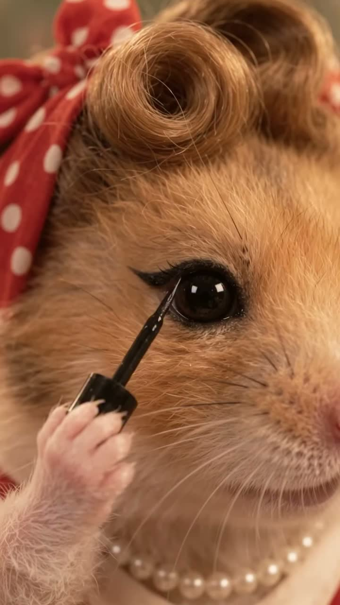
x_full_0.00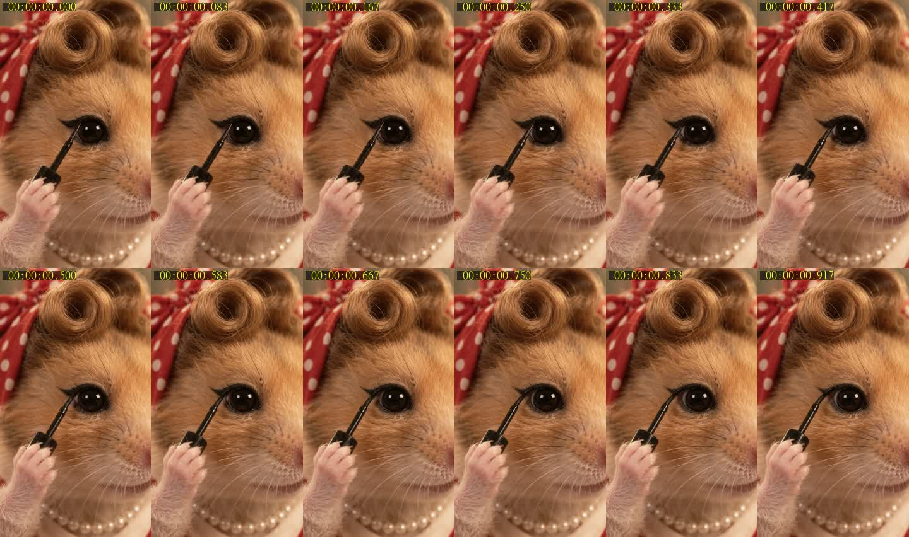
x_fps12_sec0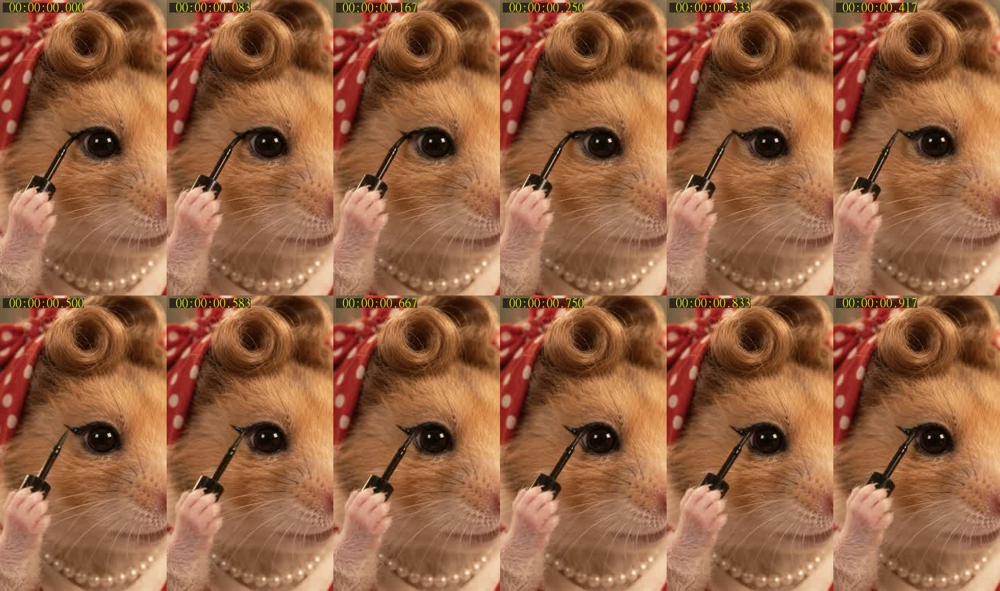
x_fps12_sec1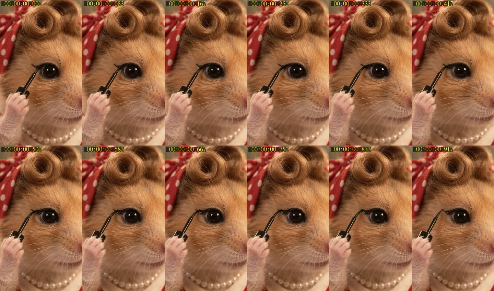
x_fps12_sec2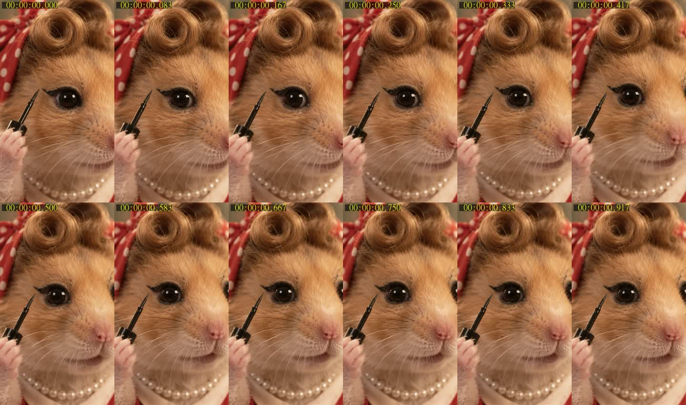
x_fps12_sec3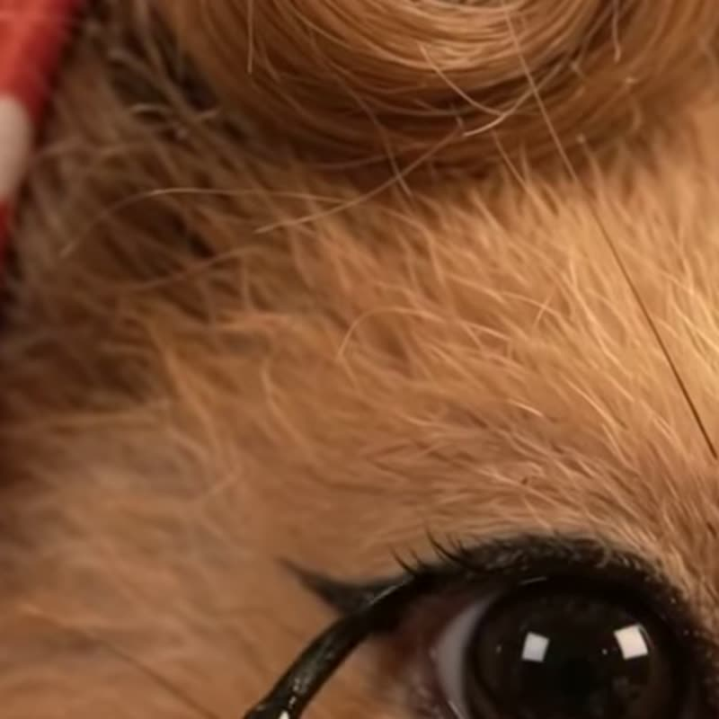
x_macro_eye_1.00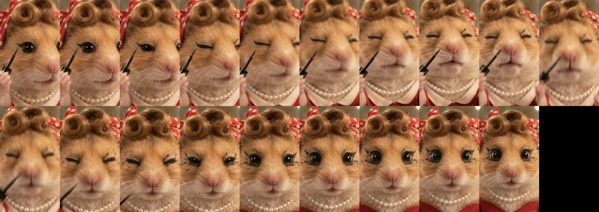
x_24fps_3.90-4.70| 카메라 움직임 | 거의 고정(광류 0.24px/f). 미세한 핸드헬드 드리프트만. 2.95s 이후 피사체가 고개를 돌리며 프레이밍이 약간 넓어지고 얼굴이 중앙으로 옴(카메라는 그대로). |
|---|---|
| 화면 구성(구도) | 0.0s 기준: 눈 중심 x≈61%, y≈49% (3분할 오른쪽 세로선 근처). 펜 끝 x≈52%, y≈46%로 눈꼬리(화면상 눈의 왼쪽 끝)에 닿음. 펜을 쥔 분홍 앞발 x≈25%, y≈72%(좌하단 3분할 교점). 핀컬 롤 중심 x≈50%, y≈15%. 빨간 물방울 반다나 좌상단 x 0~35%, y 0~50%. 코끝은 오른쪽 가장자리 x≈98%, y≈68%에서 잘림. 진주 목걸이 y≈88~97% 하단 띠. 얼굴 높이 >100%(화면보다 큼), 헤드룸 없음(컬이 상단에서 잘림). 3.5s 이후: 얼굴이 정면에 가까워져 눈 y≈40%, 코 x≈75~85%, y≈55~60%. |
| 동물 행동/연기 | [0.00-1.45] 앞발이 펜을 꼭 쥐고 펜 끝으로 눈꼬리 윙을 바깥-위쪽으로 짧게 튕기듯 약 4~5회 덧그림(스트로크 간격 0.25~0.4s). 눈은 크게 뜬 채 깜빡임 없음, 시선 고정(집중). [1.45-1.95] 펜을 살짝 떼 각도 재정렬. [1.95-2.95] 두 번째 덧그림 패스, 펜을 눈꼬리 선을 따라 쓸어 올림. [2.95-3.50] 펜을 떼서 세로로 세워 들고 고개를 카메라 쪽으로 약 30도 회전, 만족스러운 듯 눈을 크게. [3.50-3.92] 입이 살짝 벌어지고 코 씰룩(첫 들숨). [3.92-4.08] 화면 왼쪽 눈부터 감기기 시작, [4.08-4.29] 양쪽 눈 꾹, 코에 주름, 입술 오므림, 펜 끝이 코 앞으로 기움(두 번째 들숨). |
| 배경 | 따뜻한 베이지/크림색 완전 아웃포커스. 좌상단에 빨간 물방울 반다나, 하단에 진주와 빨간 옷깃 일부. |
| 화면 문구/자막 | 없음 |
| 다음 컷 전환 | Continuous (no cut) - sneeze jolt — 컷 없음. 4.29~4.42s(약 3프레임@24fps) 재채기로 머리가 앞으로 튀며 모션블러+흔들림이 생기고 그대로 2구간으로 이어짐. 2클립으로 나눠 만들 경우 이 블러 3프레임 안에 컷을 숨길 것. |
| BGM 상태 | BGM 없음. 아주 낮은 룸톤(120Hz 험 성분) 바닥 약 -50dB. |
Vertical 9:16 extreme close-up macro photograph. a chubby adult Syrian golden hamster, photorealistic, apricot-orange fur on the crown, forehead and back fading to creamy white on the cheeks, muzzle, chin and chest, soft pink nose, long fine translucent white whiskers, large round glossy jet-black eyes with two small square softbox catchlights, small rounded ears mostly hidden by hair, pink paws with tiny claws tipped in glossy black nail polish; wearing an auburn-brown 1950s pin-up wig with two large glossy victory-roll pin curls stacked on top of the head and smaller barrel curls at the sides, a red cotton bandana with white polka dots tied as a headband with the knot and two pointed bow tips sticking up on the top-left of the head (Rosie-the-Riveter style), a single strand of small creamy-white pearls resting on the white chest fur. The hamster is shown in 3/4 profile facing frame-right; its right eye is centered at 61% width and 49% height of the frame; the pin curls are cropped by the top edge, the polka-dot bandana fills the top-left corner, the pink nose is cropped at the right edge, the pearl strand runs along the bottom 10% of the frame. Its tiny pink right front paw at the lower-left (25% x, 72% y) grips a slim black liquid-eyeliner pen with a fine felt tip and a glossy black cylindrical grip/cap, held upright in the hamster's right front paw, the fine felt tip touching the outer corner of the eye. the visible eye already wears a sharp glossy black liquid-eyeliner line hugging the upper lash line and ending in a thin upward winged flick at the outer corner, with defined black lashes. Only the eye plane is sharp, 100mm macro lens, f/2.8, background a warm cream-beige blur. warm tungsten beauty light around 3000K, large soft frontal key from camera-left, bulbs creating creamy circular bokeh and a warm rim on the fur, gentle shadows, no harsh contrast. warm vintage film grade: rich saturated tomato-red, creamy highlights, slightly lifted blacks, low contrast, golden-beige midtones, fine film grain. Hyper-photorealistic fur, individual whiskers.
0-3 s: locked-off macro shot; the hamster keeps its eye wide open and perfectly still while its paw makes 4-5 tiny precise upward flicks with the eyeliner pen along the outer-corner wing, pauses briefly around 1.5 s to re-angle the pen, then does a second slow sweeping pass. Soft scratchy felt-tip sounds. 3-3.9 s: it lifts the pen away, holds it upright beside its cheek and turns its head about 30 degrees toward the camera, proud of the wing; its nose twitches and its mouth opens slightly with a small breathy inhale. 3.9-4.3 s: one eye closes, then both eyes squeeze shut, the nose wrinkles, lips purse, a second inhale 'ah... ah...'. The camera does not move. Keep the pin curls, polka-dot bandana, pearls and the clean black winged liner unchanged until the sneeze.
cartoon, 3D render, plastic toy, anime, CGI look, extra limbs, extra paws, human hands, human face, deformed eyes, cross-eyed, text overlay, subtitles, watermark, logo in corner, blurry fur, oversharpened, harsh flash, cold blue light, messy background clutter, second hamster, pen in wrong paw, liner already smeared before the sneeze
단일 생성 루트: veo-3-1 image-to-video, 8초, 9:16, 1080p(가능 시)/720p, 오디오 ON, 시작 프레임 = 위 image_prompt로 nano-banana-pro 생성본. 끝 프레임 지정(first-last frame)으로 shot 3의 end_frame 이미지를 넣으면 풀샷 공개 결과가 안정됨. 6~10회 뽑아 재채기 피크가 4.2~4.5s에 오는 테이크 선택. 2클립 루트: kling-v3 5s(0~4.4s 구간), 시드 고정.
tblend=all_mode=average:enable='between(t,4.29,4.42)',crop=iw-48:ih-48:24+16*sin(2*PI*t*18):24+12*cos(2*PI*t*15),scale=1080:1920 (shake+blur only inside 4.29-4.42)
Keep one continuous clip. If using 2 gen clips, place clip B to start at 4.33 s with a 2-frame (0.08 s) crossfade and add a 0.13 s shake keyframe (translate ±16px, 18 Hz) + motion blur filter 4.29-4.42 s.
Vertical 9:16 extreme close-up macro photograph of a 12-week-old seal-point mitted ragdoll kitten, fluffy cream-white semi-long fur with a soft seal-brown face mask and ears, large round sapphire-blue eyes with two small square catchlights, pink nose, long white whiskers, white mitted front paws, wearing the same auburn-brown 1950s pin-up wig with two large victory-roll pin curls on top, the same red white-polka-dot bandana headband tied with the bow tips up on the top-left, the same single strand of small creamy pearls. The kitten is in 3/4 profile facing frame-right; its right eye centered at 61% width, 49% height; its white mitted right paw at the lower-left (25% x, 72% y) grips a slim black liquid-eyeliner pen with a fine felt tip and a glossy black cylindrical grip/cap, held upright in the kitten's right front paw, the felt tip touching the outer corner of the eye. The eye wears a sharp glossy black winged eyeliner flick drawn along the short fur of the eyelid rim, with defined lashes. 100mm macro, f/2.8, warm cream-beige blurred background. warm tungsten beauty light around 3000K, large soft frontal key from camera-left, bulbs creating creamy circular bokeh and a warm rim on the fur, gentle shadows, no harsh contrast. warm vintage film grade: rich saturated tomato-red, creamy highlights, slightly lifted blacks, low contrast, golden-beige midtones, fine film grain.
Locked-off macro. 0-3 s: the kitten keeps its blue eye wide and still while its white paw makes tiny precise upward flicks with the eyeliner pen on the wing, soft scratchy felt-tip sounds, a brief pause at 1.5 s, then a second sweep. 3-3.9 s: it lifts the pen, turns its head toward the camera proudly, whiskers twitch, a tiny breathy inhale. 3.9-4.3 s: eyes squeeze shut, nose wrinkles, a second 'ah... ah...' inhale. Camera does not move. Keep wig, bandana, pearls and clean liner unchanged.
고양이는 털이 길어 라이너가 묻힐 수 있음 → 'drawn along the short fur of the eyelid rim' 필수. 파란 눈이 검은 라이너와 대비가 커서 망가진 뒤 개그가 더 잘 보임. 고양이 재채기는 햄스터보다 한 톤 낮은 '킷츄!'로.
| segment_note_ko | 원테이크의 1구간(컷 아님). 재현 시 단일 8초 생성의 앞부분. |
|---|
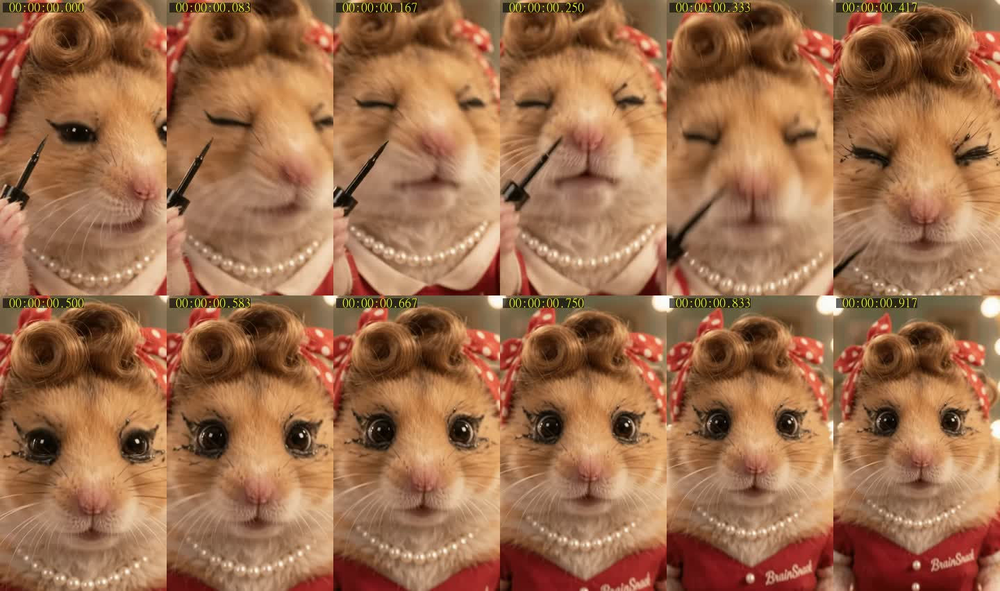
x_fps12_sec4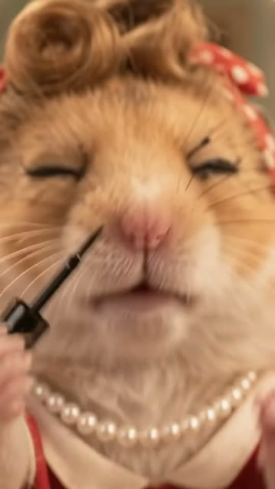
g_04.25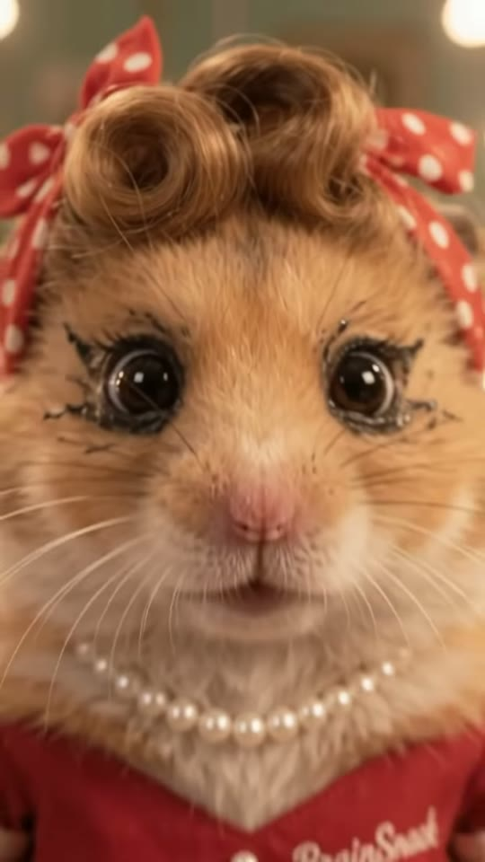
g_04.75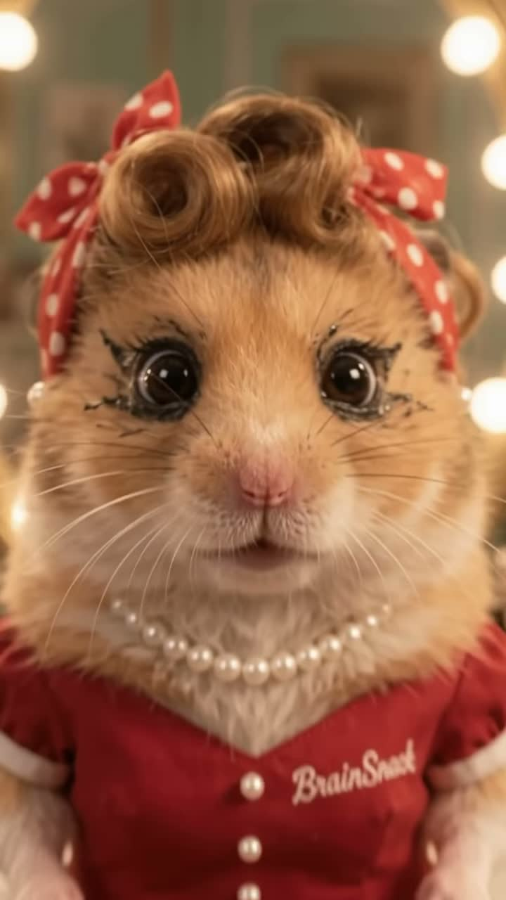
x_full_5.00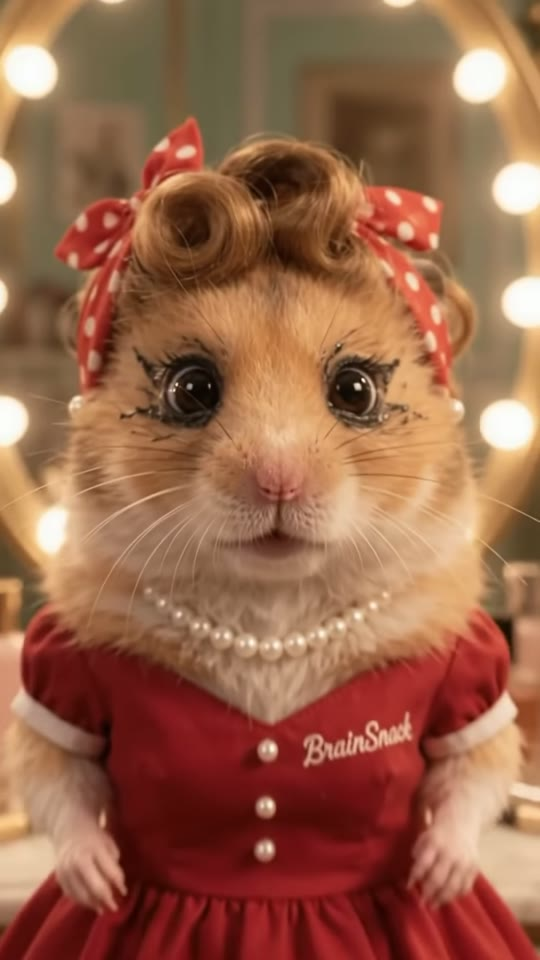
g_05.25| 카메라 움직임 | 4.29~4.42s 재채기 반동 흔들림+모션블러(프레임 차 최대 31). 4.46s부터 카메라가 정면 중앙으로 재정렬되며 빠르게 뒤로 빠짐(dolly-out/zoom-out). 4.46~5.0s 가장 빠름(프레임 차 ~15 일정), 5.0~5.9s 이즈아웃으로 감속하며 정지. 총 스케일 변화 약 3.5배(얼굴 폭 화면 100%→약 60%). |
|---|---|
| 화면 구성(구도) | 4.54s: 양쪽 눈 y≈33~36%, 좌우 대칭 x≈30%/70%, 코 x=50% y≈47%, 진주 y≈80%. 5.00s: 반다나 리본 상단 y≈8%, 눈 y≈42%, 코 y≈54%, 진주 y≈72%, 'BrainSnack' 자수 x≈62% y≈86%, 화면 양옆에 거울 전구 보케 등장. 5.6s: 얼굴 상단 1/3, 드레스 버튼·치마 하단까지(→shot 3 구도). |
| 동물 행동/연기 | [4.29-4.40] '츄!' 재채기로 머리가 앞으로 튀고 펜을 쥔 앞발이 화면 왼쪽 아래 대각선으로 휩쓸림(펜 끝이 코 앞에서 아래로). [4.42-4.50] 눈은 아직 꾹 감겨 있는데 양쪽 눈가에 낙서처럼 번진 검은 라이너가 나타남. [4.54] 두 눈을 번쩍 크게 뜸 — 너구리처럼 번진 양눈, 멍한 무표정 정면 응시, 입은 살짝 벌어진 'o'. [4.6-5.62] 표정 정지 상태로 카메라만 빠짐. 펜은 사라지고 앞발은 허리 쪽으로 내려감. |
| 배경 | 빠지면서 등장: 금색 타원 분장실 거울 + 둥근 전구 테두리, 세이지 그린 벽과 액자(거울 속 흐림), 대리석 화장대 위 핑크 향수병·금색 립스틱. |
| 화면 문구/자막 | 없음 (드레스 자수 'BrainSnack'만) |
| 다음 컷 전환 | Continuous (no cut) - camera settles — 컷 없음. 카메라 풀백이 5.6~5.9s에 이즈아웃으로 멈추며 shot 3의 고정 미디엄풀로 자연스럽게 이어짐. |
| BGM 상태 | BGM 없음. 재채기 후 4.6~5.75s 완전 정적(약 -52dB). |
Vertical 9:16 frontal close-up photograph, centered and symmetrical. a chubby adult Syrian golden hamster, photorealistic, apricot-orange fur on the crown, forehead and back fading to creamy white on the cheeks, muzzle, chin and chest, soft pink nose, long fine translucent white whiskers, large round glossy jet-black eyes with two small square softbox catchlights, small rounded ears mostly hidden by hair, pink paws with tiny claws tipped in glossy black nail polish; wearing an auburn-brown 1950s pin-up wig with two large glossy victory-roll pin curls stacked on top of the head and smaller barrel curls at the sides, a red cotton bandana with white polka dots tied as a headband with the knot and two pointed bow tips sticking up on the top-left of the head (Rosie-the-Riveter style), a single strand of small creamy-white pearls resting on the white chest fur. The hamster faces the camera dead-on, eyes wide open in a blank stunned stare, mouth slightly open. BOTH eyes are now ringed with thick smeared black eyeliner: jagged scribbled wings pointing in different directions, spiky stray pen strokes radiating into the fur, smudges under the eyes like raccoon mascara, clearly uneven and ruined. Eyes at 35% height, nose centered at 50% x / 47% y, pearls at 80% height, the top of the red dress and white chest fur at the bottom edge. Warm blurred dressing-room bokeh with a few glowing bulbs at the edges. 85mm lens, f/2.8. warm tungsten beauty light around 3000K, large soft frontal key from camera-left, bulbs creating creamy circular bokeh and a warm rim on the fur, gentle shadows, no harsh contrast. warm vintage film grade: rich saturated tomato-red, creamy highlights, slightly lifted blacks, low contrast, golden-beige midtones, fine film grain.
At 4.3 s the hamster sneezes a tiny squeaky 'tchoo!': its head jerks forward with a short motion-blurred jolt and the paw holding the eyeliner pen swings down and out of frame to the lower-left. At 4.5 s its eyes pop wide open: the sneeze has smeared black eyeliner all around BOTH eyes in jagged scribbles and raccoon smudges. It freezes with a blank stunned stare straight into the lens while the camera rapidly dollies backward (fast start, smooth ease-out, finished by 5.8 s) to reveal the red 1950s dress with 'BrainSnack' embroidered on the chest, the pearls, and a Hollywood vanity mirror framed with glowing bulbs behind it. Complete silence after the sneeze. The hamster's face and wardrobe must stay identical; no new props.
cartoon, 3D render, plastic toy, anime, CGI look, extra limbs, extra paws, human hands, human face, deformed eyes, cross-eyed, text overlay, subtitles, watermark, logo in corner, blurry fur, oversharpened, harsh flash, cold blue light, messy background clutter, second hamster, pen in wrong paw, liner already smeared before the sneeze, clean eyeliner after the sneeze, pen still in paw after the reveal, camera zooming in
단일 루트면 shot 1과 같은 8초 생성의 일부. 2클립 루트: 클립 B = kling-v3 first-last-frame 5s, 첫 프레임 = 재채기 직후 번진 눈 ECU, 끝 프레임 = shot 3 end frame. 생성 후 앞 0.1s를 잘라 4.33s에 이어 붙임.
If rebuilding the pull-back from a static full shot: zoompan=z='if(lt(it,4.46),3.4,max(1.0,3.4-2.4*(1-pow(1-min((it-4.46)/1.3,1),3))))':x='iw/2-(iw/zoom/2)':y='ih*0.30-(ih/zoom/2)':d=1:s=1080x1920:fps=30 (cubic ease-out 4.46-5.76 s)
Scale keyframes on the video layer: 4.46 s scale 3.4 anchored at the eyes (50% x, 36% y) -> 5.76 s scale 1.0, easing cubic-out. Only needed if the gen clip does not already contain the pull-back.
Vertical 9:16 frontal close-up of the same seal-point mitted ragdoll kitten with sapphire-blue eyes, wearing the same auburn-brown 1950s pin-up wig with two large victory-roll pin curls on top, the same red white-polka-dot bandana headband tied with the bow tips up on the top-left, the same single strand of small creamy pearls, wearing a red 1950s swing dress: V/sweetheart neckline showing the white chest fur, short puffed sleeves with white cuff bands, three white pearl buttons down the fitted bodice, cinched waist, full gathered knee-length skirt, the word 'BrainSnack' embroidered in small white cursive on the right side of the chest (viewer's right). BOTH blue eyes are ringed with thick smeared black eyeliner, jagged scribbled wings, spiky strokes in the fur and raccoon smudges. Blank stunned stare into the lens, mouth slightly open. Warm Hollywood dressing-room bokeh. 85mm, f/2.8. warm tungsten beauty light around 3000K, large soft frontal key from camera-left, bulbs creating creamy circular bokeh and a warm rim on the fur, gentle shadows, no harsh contrast. warm vintage film grade: rich saturated tomato-red, creamy highlights, slightly lifted blacks, low contrast, golden-beige midtones, fine film grain.
The kitten sneezes a tiny 'kchoo!', head jerking forward with motion blur, the pen flying out of frame lower-left; its eyes pop open showing smeared eyeliner all around both eyes; it freezes in a stunned stare while the camera dollies back fast with an ease-out to reveal the red 1950s dress and the bulb-framed vanity mirror. Silence after the sneeze.
고양이 수염이 재채기 때 앞으로 튀는 디테일을 넣으면 리얼함↑. 풀백 끝에서 고양이가 앉은 자세가 되기 쉬우니 'standing upright on hind legs like a tiny actress' 추가.
| segment_note_ko | 원테이크의 2구간(컷 아님): 재채기 + 풀백 리빌. |
|---|
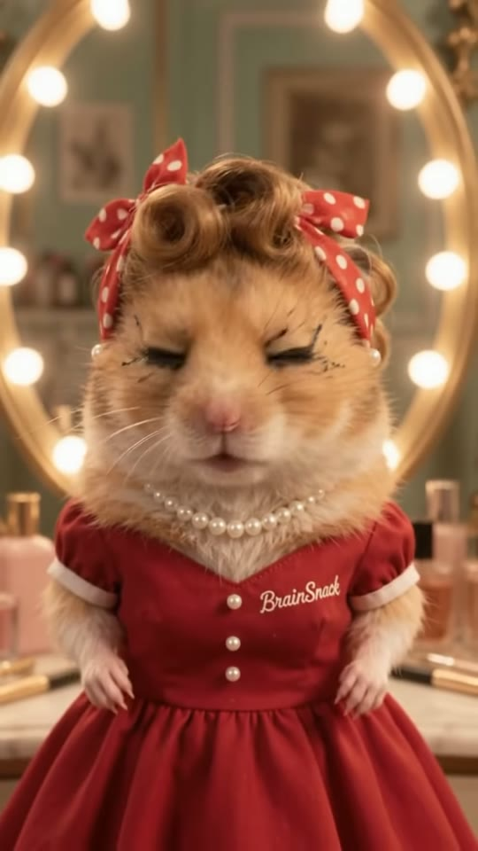
g_05.75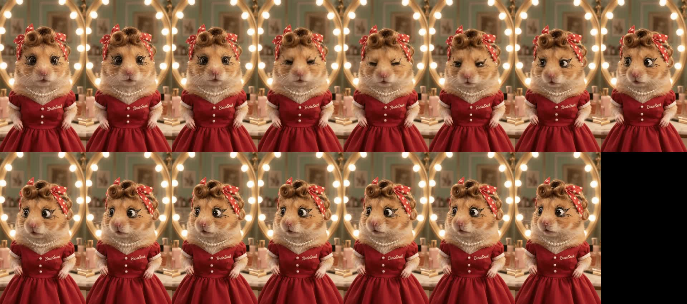
x_24fps_5.55-6.20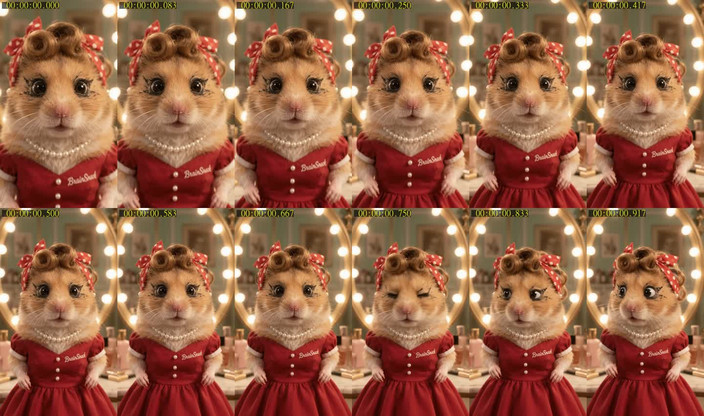
x_fps12_sec5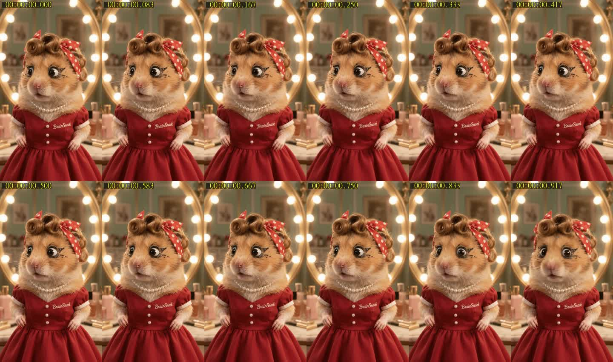
x_fps12_sec6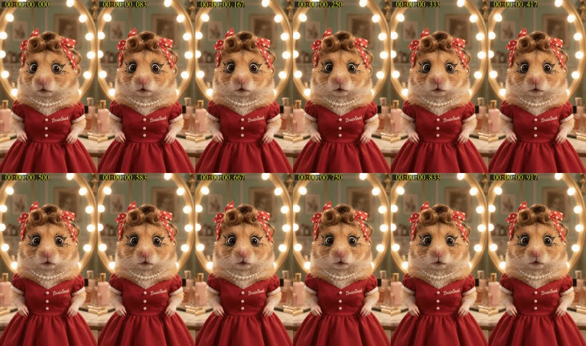
x_fps12_sec7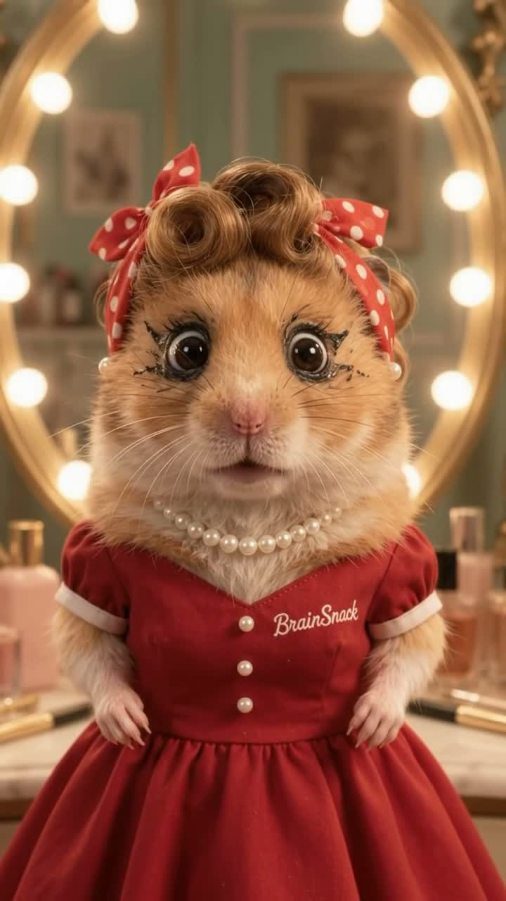
x_full_7.90| 카메라 움직임 | 5.62~5.9s 풀백의 마지막 감속, 이후 고정(프레임 차 0.1~1.0). 6.96s 머리 복귀 때만 작은 움직임. |
|---|---|
| 화면 구성(구도) | 7.9s 기준: 피사체 중앙 x=50%. 반다나 리본 상단 y≈16%(헤드룸 16%), 핀컬 y≈18~30%, 눈 y≈39% (좌 x≈37%, 우 x≈61%, 상단 3분할선 약간 아래), 코 y≈47%, 입 y≈52%, 진주 y≈59%, 'BrainSnack' 자수 x≈62% y≈69%, 버튼 3개 x≈48% y≈69/74/78%, 앞발 허리 위 y≈80% (x≈25%, 75%), 치마가 하단 가장자리까지. 배경: 타원 거울 테두리가 피사체를 액자처럼 감싸는 원형 프레이밍(전구 약 12개 보임), 화장대 상판 y≈80~85%, 좌하단·우하단에 핑크 향수병. |
| 동물 행동/연기 | [5.62-5.67] 번진 눈으로 멍한 정면 응시. [5.67-5.75] 양눈을 천천히 꾹 감음(현실 부정 깜빡임). [5.79] 눈을 뜨며 눈동자만 화면 오른쪽으로 곁눈질, 고개는 화면 왼쪽으로 약 15도 기울며 틀고 입은 살짝 벌린 'o' — '방금 무슨 일?' 표정 (6.0~6.9s 유지, 미세 수염 떨림). [6.96] 고개를 정면으로 스냅 복귀, 눈 크게 뜨고 카메라 정면 응시. [7.0-8.0] 거의 완전 정지(데드팬), 앞발은 계속 허리 위. |
| 배경 | 할리우드 분장실: 금색 타원 거울 + 둥근 전구 약 12개(따뜻한 흰색, 크게 번진 보케), 거울 속 세이지 그린 벽과 빈티지 액자, 대리석 화장대, 핑크 향수병·블러셔·금색 립스틱. |
| 화면 문구/자막 | 없음 (드레스 자수 'BrainSnack') |
| 다음 컷 전환 | End (hard end on still hold) / loop — 8.00s 정지된 정면 응시에서 그대로 끝. 페이드 없음. 오디오는 화음 잔향이 -50dB까지 자연 감쇠. |
| BGM 상태 | BGM 없음. 5.81s 단 한 번의 화음 스팅이 끝까지 울리며 감쇠. |
Vertical 9:16 medium-full photograph, eye-level, centered and symmetrical. a chubby adult Syrian golden hamster, photorealistic, apricot-orange fur on the crown, forehead and back fading to creamy white on the cheeks, muzzle, chin and chest, soft pink nose, long fine translucent white whiskers, large round glossy jet-black eyes with two small square softbox catchlights, small rounded ears mostly hidden by hair, pink paws with tiny claws tipped in glossy black nail polish; wearing an auburn-brown 1950s pin-up wig with two large glossy victory-roll pin curls stacked on top of the head and smaller barrel curls at the sides, a red cotton bandana with white polka dots tied as a headband with the knot and two pointed bow tips sticking up on the top-left of the head (Rosie-the-Riveter style), a single strand of small creamy-white pearls resting on the white chest fur, wearing a red 1950s swing dress: V/sweetheart neckline showing the white chest fur, short puffed sleeves with white cuff bands, three white pearl buttons down the fitted bodice, cinched waist, full gathered knee-length skirt, the word 'BrainSnack' embroidered in small white cursive on the right side of the chest (viewer's right). It stands upright on its hind legs like a tiny actress with both front paws resting on its hips over the skirt, staring straight into the lens with wide stunned eyes, mouth slightly open. BOTH eyes are now ringed with thick smeared black eyeliner: jagged scribbled wings pointing in different directions, spiky stray pen strokes radiating into the fur, smudges under the eyes like raccoon mascara, clearly uneven and ruined. Framing: bandana bow top at 16% height, eyes at 39% height, pearls at 59%, 'BrainSnack' embroidery at 62% x / 69% y, paws at 80% height, skirt cut by the bottom edge. Background: a 1950s Hollywood dressing room: behind the subject an oval gold-framed vanity mirror bordered by about 14 glowing round warm-white globe bulbs, sage-green paneled wall with framed vintage photos seen blurred in the mirror, a white marble vanity counter with pink glass perfume bottles, a blush compact and gold lipstick tubes, the oval bulb-lit mirror frames the hamster like a halo. 50mm lens, f/2.8. warm tungsten beauty light around 3000K, large soft frontal key from camera-left, bulbs creating creamy circular bokeh and a warm rim on the fur, gentle shadows, no harsh contrast. warm vintage film grade: rich saturated tomato-red, creamy highlights, slightly lifted blacks, low contrast, golden-beige midtones, fine film grain.
Vertical 9:16 medium-full photograph, eye-level, perfectly centered: a chubby adult Syrian golden hamster, photorealistic, apricot-orange fur on the crown, forehead and back fading to creamy white on the cheeks, muzzle, chin and chest, soft pink nose, long fine translucent white whiskers, large round glossy jet-black eyes with two small square softbox catchlights, small rounded ears mostly hidden by hair, pink paws with tiny claws tipped in glossy black nail polish; wearing an auburn-brown 1950s pin-up wig with two large glossy victory-roll pin curls stacked on top of the head and smaller barrel curls at the sides, a red cotton bandana with white polka dots tied as a headband with the knot and two pointed bow tips sticking up on the top-left of the head (Rosie-the-Riveter style), a single strand of small creamy-white pearls resting on the white chest fur, wearing a red 1950s swing dress: V/sweetheart neckline showing the white chest fur, short puffed sleeves with white cuff bands, three white pearl buttons down the fitted bodice, cinched waist, full gathered knee-length skirt, the word 'BrainSnack' embroidered in small white cursive on the right side of the chest (viewer's right), standing upright with both front paws on its hips, wide-eyed deadpan stare into the lens. BOTH eyes are now ringed with thick smeared black eyeliner: jagged scribbled wings pointing in different directions, spiky stray pen strokes radiating into the fur, smudges under the eyes like raccoon mascara, clearly uneven and ruined. Oval gold vanity mirror ringed with ~12 glowing globe bulbs behind it, sage-green wall, marble counter with pink perfume bottles and gold lipsticks. Bandana top at 16% height, eyes at 39%, skirt cut by the bottom edge. 50mm, f/2.8. warm tungsten beauty light around 3000K, large soft frontal key from camera-left, bulbs creating creamy circular bokeh and a warm rim on the fur, gentle shadows, no harsh contrast. warm vintage film grade: rich saturated tomato-red, creamy highlights, slightly lifted blacks, low contrast, golden-beige midtones, fine film grain.
Locked-off camera. The hamster stands frozen in a blank stare with smeared eyeliner, then at 5.7 s slowly squeezes both eyes shut and reopens them; at 5.8 s a single soft piano chord 'ding' rings out while it gives a slow side-eye toward frame-right with its head tilted slightly to frame-left and lips parted, holding that look for a second; at 7.0 s it snaps its head back to face the lens and stays perfectly still, wide-eyed and deadpan, until the end. Paws stay on the hips. No music, no other movement, wardrobe and makeup unchanged.
cartoon, 3D render, plastic toy, anime, CGI look, extra limbs, extra paws, human hands, human face, deformed eyes, cross-eyed, text overlay, subtitles, watermark, logo in corner, blurry fur, oversharpened, harsh flash, cold blue light, messy background clutter, second hamster, pen in wrong paw, liner already smeared before the sneeze, camera movement, pen in paw, clean makeup, smiling, talking mouth
단일 루트: 이 end_frame_prompt 이미지를 veo-3-1 first-last-frame의 끝 프레임으로 사용. 2클립 루트에선 클립 B 뒷부분. 곁눈질 방향(화면 오른쪽)과 6.96s 정면 복귀를 프롬프트에 초 단위로 명시.
no fade; optional loop helper: tpad=stop_mode=clone:stop_duration=0 (keep hard end)
Clip ends at 8.00 s with no outro transition; set composition to loop.
Vertical 9:16 medium-full photograph, eye-level, centered: a 12-week-old seal-point mitted ragdoll kitten with sapphire-blue eyes, wearing the same auburn-brown 1950s pin-up wig with two large victory-roll pin curls on top, the same red white-polka-dot bandana headband tied with the bow tips up on the top-left, the same single strand of small creamy pearls, wearing a red 1950s swing dress: V/sweetheart neckline showing the white chest fur, short puffed sleeves with white cuff bands, three white pearl buttons down the fitted bodice, cinched waist, full gathered knee-length skirt, the word 'BrainSnack' embroidered in small white cursive on the right side of the chest (viewer's right), standing upright on its hind legs with white mitted paws on its hips, wide stunned blue eyes ringed with smeared black eyeliner and raccoon smudges, staring into the lens. a 1950s Hollywood dressing room: behind the subject an oval gold-framed vanity mirror bordered by about 14 glowing round warm-white globe bulbs, sage-green paneled wall with framed vintage photos seen blurred in the mirror, a white marble vanity counter with pink glass perfume bottles, a blush compact and gold lipstick tubes. 50mm, f/2.8. warm tungsten beauty light around 3000K, large soft frontal key from camera-left, bulbs creating creamy circular bokeh and a warm rim on the fur, gentle shadows, no harsh contrast. warm vintage film grade: rich saturated tomato-red, creamy highlights, slightly lifted blacks, low contrast, golden-beige midtones, fine film grain.
Locked-off. The kitten stares blankly, slowly squeezes its eyes shut and reopens them; a single soft piano chord rings; it gives a slow side-eye to frame-right with head tilted to frame-left and ears slightly flattened; at 7 s it snaps back to a wide-eyed deadpan stare into the lens and holds still to the end.
고양이는 귀 동작(살짝 뒤로 젖힘)이 곁눈질 개그를 강화 — 햄스터엔 없는 추가 연기 포인트.
| segment_note_ko | 원테이크의 3구간: 고정 미디엄풀. 깜빡임→곁눈질→정면 응시 정지. |
|---|
BGM 없음(추정 확신 높음). 전체가 효과음+정적으로만 구성된 '폴리 코미디'. 54% 정적 비율이 개그 타이밍 자체. 소스는 16kHz 분석본 기준 험 성분 120/240/360Hz가 깔린 아주 낮은 룸톤 + 펜 긁는 소리 + 들숨 2 + 재채기 + 화음 스팅 1. Veo 계열 네이티브 오디오의 전형적 구성으로 추정.
No background music. Only if a music bed is required for platform reasons: a 2-second single soft felt-piano chord sting, D dominant seventh voicing (D4, F#4, C5), gentle attack, natural sustain pedal decay, dry intimate room, comedic awkward pause feeling, no melody, no drums.
| 0.05s | eyeliner felt-tip scratching, short strokes, 1.4 s · -26 dB 검색어: pen scratch close mic, felt tip marker writing ASMR, eyeliner application sound 생성: Very close-miked ASMR sound of a fine felt-tip eyeliner pen making 5 short quick upward strokes on soft skin, dry, intimate, quiet, 1.4 seconds |
|---|---|
| 1.95s | eyeliner scratching second pass, 1.0 s · -30 dB 검색어: marker scribble soft, pen stroke slow ASMR 생성: Close-miked ASMR of a felt-tip eyeliner pen slowly sweeping two long strokes on skin, very quiet and soft, 1 second |
| 3.5s | tiny pre-sneeze inhale 1 · -18 dB 검색어: small animal inhale, cute sniff, pre sneeze breath 생성: A tiny cute rodent taking a quick breathy inhale before a sneeze, 'hh-ah', 0.2 seconds, close and dry |
| 4.05s | tiny pre-sneeze inhale 2 (sharper) · -18 dB 검색어: cute pre sneeze gasp, ah ah 생성: A tiny cute rodent's second sharper pre-sneeze gasp 'ah!', 0.15 seconds, close and dry |
| 4.33s | tiny squeaky sneeze 'tchoo!' · -3 dB 검색어: hamster sneeze, tiny cute sneeze, cartoon small animal sneeze realistic 생성: A single tiny high-pitched squeaky sneeze from a small hamster, 'tchoo!', sharp and cute, very close microphone, 0.25 seconds, no reverb |
| 5.81s | soft piano/celesta chord sting D-F#-C, 2 s decay · -10 dB 검색어: awkward piano chord sting, comedic single chord, celesta ding 생성: A single soft felt-piano chord (D, F sharp, C) struck once and left to ring out naturally for 2 seconds, awkward comedic pause sting, dry room |
| 0.0s | room tone bed (very low, 8 s) · -46 dB 검색어: quiet room tone, dressing room ambience silent 생성: Almost silent small quiet room tone with a faint low electrical hum, 8 seconds |
음악 없음, 덕킹 불필요. 레벨 계층: 재채기(피크 -3dBFS) > 화음 스팅(-10) > 들숨(-18) > 펜 긁음(-26~-30) > 룸톤(-46). 4.60~5.75s는 룸톤만 남겨 '진짜 정적'을 만들 것(여기에 음악 깔면 개그 타이밍 붕괴). 스팅은 페이드 없이 자연 감쇠로 8.00s에 -50dB 도달. 최종 라우드니스 약 -16 LUFS 통합(대부분이 조용해 피크 기준으로 -1dBTP 리미터). Veo 네이티브 오디오를 쓰면 이 구성이 자동 생성될 확률이 높으므로 먼저 네이티브 오디오를 들어보고 부족한 요소만 보강.
기본 교체 동물: ragdoll kitten (12 weeks, seal-point mitted, sapphire-blue eyes) · 대안: guinea pig (smooth-coat, tan-and-white, round dark eyes; the bandana sits between the droopy ears; sneeze = tiny 'pfft' squeak), chinchilla (velvet silver-grey fur, huge black eyes, large round ears poking through the bandana; very photogenic for liner because the eye is big and dark)
Character reference sheet, 3 views on a plain warm-beige seamless background, identical lighting: (1) extreme close-up 3/4 profile of the right eye with a clean black winged eyeliner and the paw holding a slim black felt-tip eyeliner pen, (2) frontal close-up with both eyes ringed in smeared black eyeliner, (3) frontal medium-full standing upright with paws on hips. Subject: [ANIMAL CORE], wearing an auburn-brown 1950s pin-up wig with two large glossy victory-roll pin curls on top and small side barrel curls, a red cotton bandana with white polka dots tied as a headband with the knot and two pointed bow tips up on the top-left, a single strand of small creamy pearls, and a red 1950s swing dress with short puffed sleeves with white cuffs, V neckline, three white pearl buttons, cinched waist, full gathered skirt, 'BrainSnack' (replace with your channel name) embroidered in small white cursive on the right chest. Hyper-photorealistic fur and fabric, warm tungsten beauty light, 9:16 per panel, no text labels.
| same_hamster_new_gags_ko |
|
|---|
#!/usr/bin/env bash
# v02 hamster eyeliner sneeze - assembly. Usage: bash build.sh A (single veo clip) | bash build.sh B (2 kling clips)
set -euo pipefail
MODE="${1:-A}"
W=1080; H=1920; FPS=30
GRADE="eq=saturation=1.04:contrast=0.98:gamma=1.01,colorbalance=rm=0.02:bm=-0.03:rh=0.02"
SHAKE="tblend=all_mode=average:enable='between(t,4.29,4.42)',crop=iw-48:ih-48:'24+16*sin(2*PI*t*18)*between(t,4.29,4.42)':'24+12*cos(2*PI*t*15)*between(t,4.29,4.42)',scale=${W}:${H}:flags=lanczos"
if [ "$MODE" = "A" ]; then
# one continuous 8 s generation: upscale, retime, grade (shake already inside the gen)
ffmpeg -v error -y -i s01.mp4 -filter_complex \
"[0:v]trim=0:8,setpts=PTS-STARTPTS,scale=${W}:${H}:flags=lanczos,setsar=1,fps=${FPS},${GRADE}[v]" \
-map "[v]" -an -c:v libx264 -crf 16 -preset slow -pix_fmt yuv420p v_only.mp4 < /dev/null
ffmpeg -v error -y -i s01.mp4 -vn -af "atrim=0:8,asetpts=PTS-STARTPTS" -ar 48000 -ac 2 native.wav < /dev/null || true
else
# s01 = ECU liner + pre-sneeze (use 0-4.33 s), s02 = sneeze aftermath + pull-back + side-eye (use 0-3.80 s)
ffmpeg -v error -y -i s01.mp4 -i s02.mp4 -filter_complex \
"[0:v]trim=0:4.33,setpts=PTS-STARTPTS,scale=${W}:${H}:flags=lanczos,setsar=1,fps=${FPS}[a];\
[1:v]trim=0:3.80,setpts=PTS-STARTPTS,scale=${W}:${H}:flags=lanczos,setsar=1,fps=${FPS}[b];\
[a][b]xfade=transition=fade:duration=0.08:offset=4.25,${SHAKE},${GRADE},trim=0:8,setpts=PTS-STARTPTS[v]" \
-map "[v]" -an -c:v libx264 -crf 16 -preset slow -pix_fmt yuv420p v_only.mp4 < /dev/null
fi
# ---- audio: use native.wav if it already has the sneeze; otherwise rebuild from SFX ----
if [ "$MODE" = "A" ] && [ -s native.wav ] && [ "${REBUILD_SFX:-0}" = "0" ]; then
ffmpeg -v error -y -i native.wav -af "alimiter=limit=0.89" mix.wav < /dev/null
else
ffmpeg -v error -y \
-i sfx_roomtone.wav -i sfx_scratch1.wav -i sfx_scratch2.wav -i sfx_inhale1.wav -i sfx_inhale2.wav -i sfx_sneeze.wav -i sfx_sting.wav \
-filter_complex \
"[0:a]atrim=0:8,volume=-46dB[rt];\
[1:a]adelay=50|50,volume=-26dB[s1];\
[2:a]adelay=1950|1950,volume=-30dB[s2];\
[3:a]adelay=3500|3500,volume=-18dB[i1];\
[4:a]adelay=4050|4050,volume=-18dB[i2];\
[5:a]adelay=4330|4330,volume=-3dB[sn];\
[6:a]adelay=5810|5810,volume=-10dB[st];\
[rt][s1][s2][i1][i2][sn][st]amix=inputs=7:normalize=0:duration=longest,apad=whole_dur=8,atrim=0:8,aformat=sample_rates=48000:channel_layouts=stereo,alimiter=limit=0.89[a]" \
-map "[a]" mix.wav < /dev/null
fi
ffmpeg -v error -y -i v_only.mp4 -i mix.wav -map 0:v -map 1:a -c:v copy -c:a aac -b:a 192k -shortest -movflags +faststart v02_remake_1080x1920.mp4 < /dev/null
echo done: v02_remake_1080x1920.mp4
Use the HyperFrames skill to build a 1080x1920, 30 fps, exactly 8.00 s vertical composition named 'eyeliner-sneeze'. NO captions, NO text overlays, NO music bed, NO outro. Assets in ./assets: s01.mp4 (either one continuous 8 s generation, or the first of two clips), optional s02.mp4, and SFX files sfx_roomtone.wav, sfx_scratch1.wav, sfx_scratch2.wav, sfx_inhale1.wav, sfx_inhale2.wav, sfx_sneeze.wav, sfx_sting.wav. VIDEO TRACK - If only s01.mp4 exists: place it 0.00-8.00 s, cover-fit 1080x1920, keep its native audio as track 'native' (volume 0 dB) and skip the SFX track unless I say the native audio lacks the sneeze. - If s02.mp4 exists: s01.mp4 from 0.00 to 4.33 s (source 0-4.33); s02.mp4 from 4.25 to 8.00 s (source 0-3.80) with a 0.08 s crossfade at 4.25-4.33. On the composite apply a camera-shake keyframe group 4.29-4.42 s (translateX ±16 px at 18 Hz, translateY ±12 px at 15 Hz, scale 1.05 to hide edges) and a directional motion blur 4.29-4.42 s. - If the generated clip is static after the sneeze, fake the pull-back: scale 3.4 anchored at (50%, 36%) at 4.46 s -> scale 1.0 at 5.76 s, cubic ease-out. - Global warm grade: saturation +4%, slight red lift in highlights, blue -3%. SFX TRACK (only when rebuilding audio), exact cue times and gains: 0.00 roomtone -46 dB for 8 s | 0.05 scratch1 -26 dB | 1.95 scratch2 -30 dB | 3.50 inhale1 -18 dB | 4.05 inhale2 -18 dB | 4.33 sneeze -3 dB (peak must land at 4.40 s) | 5.81 sting -10 dB, let it ring out, no fade. Keep 4.60-5.75 s silent except room tone. Limit to -1 dBTP. BEAT MAP for reference: 0-2.95 liner strokes (ASMR) | 2.95-3.92 head turns to camera, inhale | 3.92-4.29 face scrunch | 4.29-4.46 SNEEZE | 4.46-5.62 pull-back reveal of smeared raccoon eyes and red pin-up dress, silence | 5.67-5.75 slow blink | 5.81 chord + side-eye to frame-right | 6.96 head snaps back to camera | 7.0-8.0 deadpan hold. Render to out/v02_remake.mp4, then run the HyperFrames check and snapshot at 0.5, 4.35, 5.0, 6.2 and 7.9 s so I can verify framing.
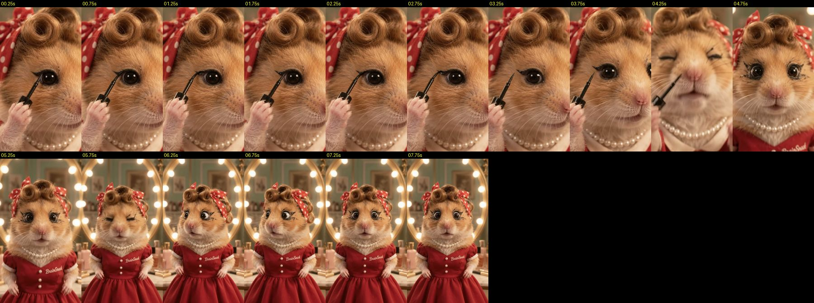